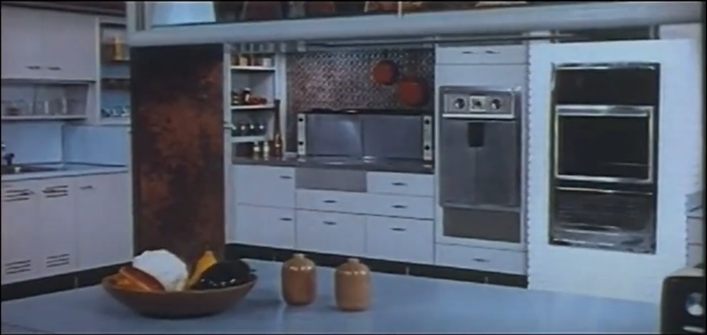
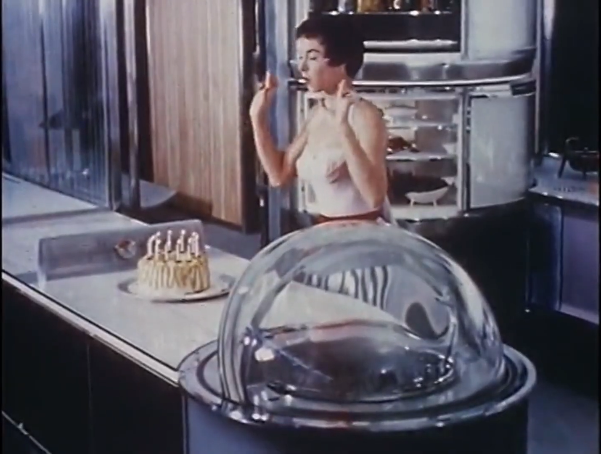
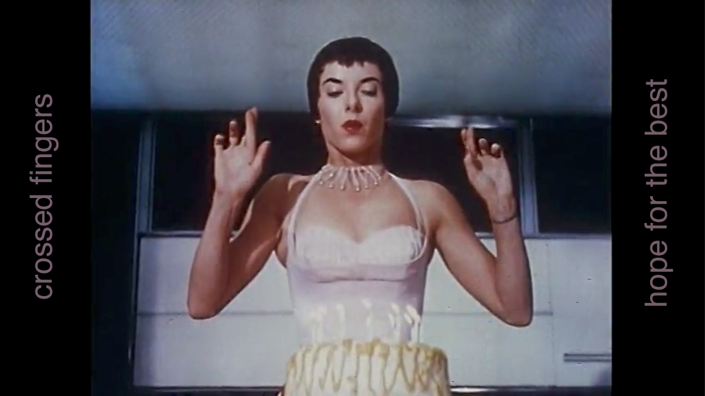

Artist's reflection
For inspiration I drew from my long-standing fascination with the depiction of the future from the perspective of humanity’s past. I, and others, refer to this as yesterday’s tomorrow. This concept of yesterday’s tomorrow provides fertile ground for exploring how we as a society project our hopes, dreams, and fears forward in time. Certainly this is easy enough to see in science fiction literature and films; it’s a genre that often employs allegory wrapped in a future-shaped package to comment on our present. In this capacity, it is intentional and premeditated. Watching any Star Trek episode from the original series to Voyager will demonstrate this packaging fairly succinctly. However, depictions of the future also exist outside the realm of science fiction in the shape of marketing films. The 1940s through the 1970s were filled with marketing films from the likes of AT&T, Frigidaire, Chevrolet, IBM and many other corporations large and small. Many of these films were meant to show a bright future made ever more so by the company’s products of tomorrow. They depicted the kitchen, car, subway, telephone of tomorrow. In these depictions the future was always bright, and shiny, and convenient. The future, as seen from the early-post World War II era into the mid Vietnam war era was going to be just swell.
My core concept for this project was to build a short film made of found footage that took the hopeful, shiny, clean, and always convenient examples of yesterday’s future tech and slowly twist and cut and clip and reconfigure it to fit more closely the world we have crafted due to our inextinguishable hubris and desire for convenience and quantity over quality and kindness. The media for the film came from the Prelinger Archives and I further confined my available films to those that specifically depicted kitchens of the future and the future of humanity in space.


I also sought a soundtrack for the piece that would provide both a tempo and a commentary on the chosen clips through voiceover and lyrics. I decided to combine two of songs whose lyrics, when edited together, helped tell the story. I chose Laura Veirs’ Galaxies, and The Church’s Under the Milky Way Tonight.
In their reimagined form the two songs intermingle to form a unified whole that both narrates and drives the visual story; the lyrics interact with the visuals as both cause and effect.
In evaluating the final piece with the distance of a few days from finishing it I have a few observations. First, there are a few things I would change listed here in no particular order. Every time I watch the piece I wish that there was some additional message that appeared in the black bars to the left and right of the 4:3 frame.

Our modern eyes are used to seeing a 16:9 frame, and YouTube and other streaming services are tuned to this aspect ratio. I feel this space is perfect for commentary simply due to its location in the frame. This commentary would be an evaluation of our past’s hope for our future that never was from the future that we created. I would love to be able to remix the song using pristine audio stems: separate instrumental and vocal tracks. I’ve asked both artists if they might be able to make these available to me, but have not yet heard back. I would also like to change the clip of the two scientists at 18 seconds, though every time I see their self-satisfied faces after the smoke clears, I question the desire to change it.
Finally, I find myself mesmerized by how editing the two songs together creates its own audio Kuleshov effect. For instance, at 1:36 Veirs sings, “When we kiss,” which is followed by The Church’s “leads you here despite your destination.” This plays over the rocket launch sequence and was done so to suggest that no matter what we do, even when we believe we are doing the right thing, our proclivity for self-destruction always rests nearby. These two songs are delightfully thematically unrelated. Steve Kilbey, The Church’s lead singer, has said in an interview that “... there are songs that operate as a premise for you to have your own adventure. Under the Milky Way is definitely one of those songs. Although it’s not really about anything at all, I just wanted to create an atmosphere and I didn’t even put a lot of thought into that.” Veirs’ Galaxies evokes deep passion, feeling and emotion that generates large-scale physicality. I would suggest that Kilbey’s song is more ambivalent, evoking feelings of loss and longing but also curiosity and desire. Putting them together yields a soundtrack that, to me, feels hopeful on the surface but ominous in its undertones.
Ultimately the piece came out better than I had originally anticipated. It needs work; it needs tightening up, some swapping of images, perhaps the addition of the “modern commentary,” but it also seems to work. It’s one of the few things I’ve made that I enjoy watching. I think a large part of this might be due to having so many obstructions in the way of making anything at all. In a way, I suppose the outcome was inevitable.